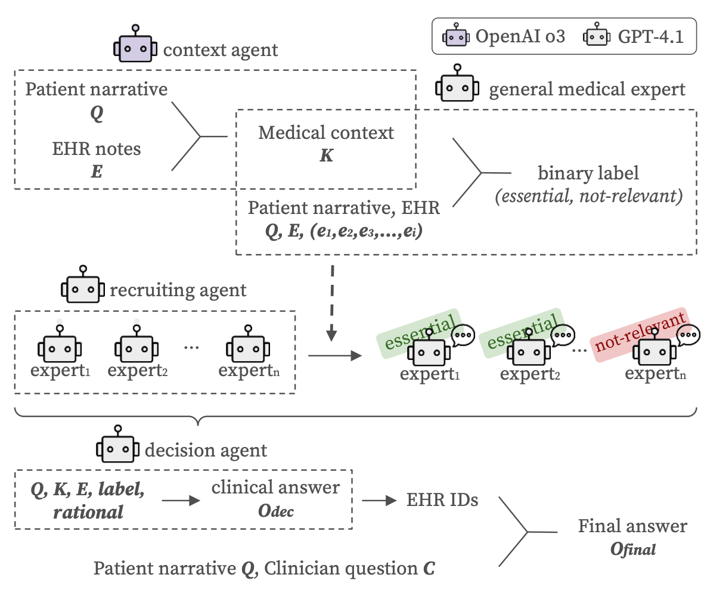
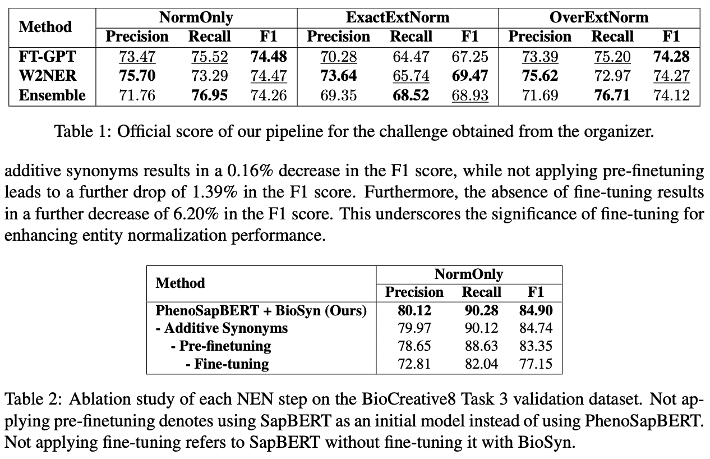

Other Publications

[4] Automatic genetic phenotype normalization from dysmorphology physical examinations: an overview of the BioCreative VIII—Task 3 competition
[3] DMIS Lab at MedHopQA-2025: Ensemble Multi-Retrieval Methodologies with Reasoning Language Model Decision

[2] DMIS Lab at ArchEHR-QA 2025: Evidence-Grounded Answer Generation for EHR-based QA via a Multi-Agent Framework
